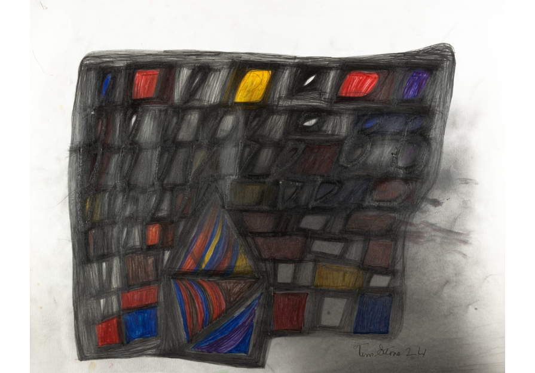

Soo Shin and Tim Stone: Parallel Acts: A Practice of Staying
Parallel Acts: A Practice of Staying brings together two practices that understand gesture as a durational condition rather than a singular event. In both bodies of work, movement is sustained over time, and repetition becomes a means of transformation rather than reproduction.
In Shin’s ongoing series, Pas de Deux, Soo Shin constructs a buoyant vessel that floats in the Pacific Ocean while tethered to her body. Paper and pigmented wooden balls move freely within the structure, allowing ocean currents to register motion across the surface. Gesture emerges through sustained presence and shared agency between body, material, and environment, recorded as residue over time rather than intention.
Tim Stone’s works are formed through repeated return to a single drawing. By tracing and retracing his own marks over extended periods, he allows accumulation to alter the surface. Through accumulation, the surface slowly transforms: compression builds, sheen develops, and the drawing shifts toward another material state. Staying with the same gesture becomes a means of altering both surface and substance.
Placed together, these practices unfold as parallel acts of staying—where movement persists, time accumulates, and matter becomes the record of duration.